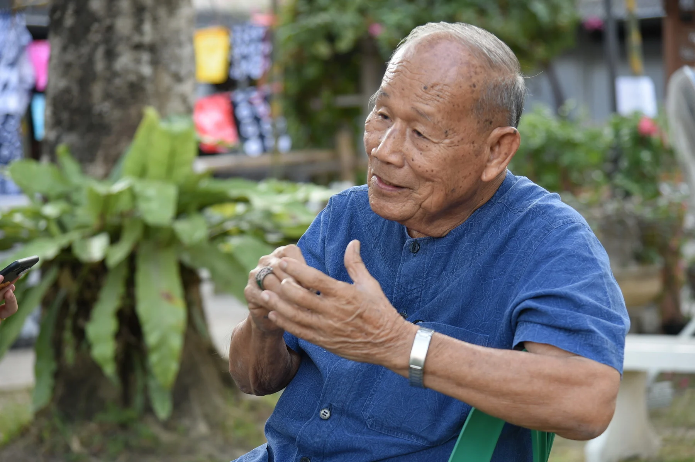
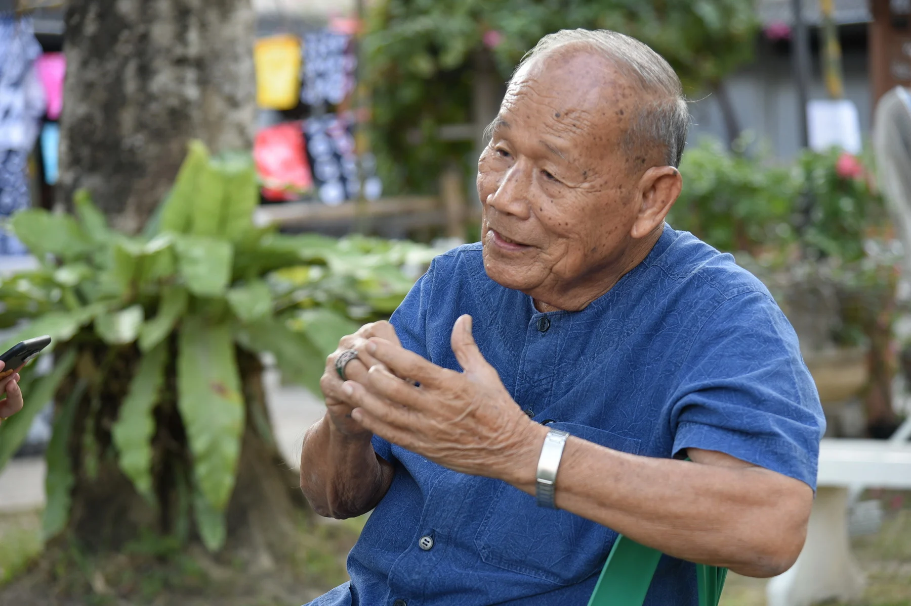

ได้รับการยกย่องว่าเป็นแหล่งเรียนรู้ภูมิปัญญาชาวบ้านที่ดีที่สุดแห่งหนึ่งในภูมิภาคเอเชียตะวันออกเฉียงใต้ ก่อตั้งขึ้นโดย “ลุงจ่า” หรือ จ่าสิบเอกทวี บูรณเขตต์ ผู้เก็บสะสมของเก่าของตัวเองและจากชาวบ้านทั่วไปเป็นเวลานานกว่า 20 ปี ถูกนำมาจัดเรียงโชว์แบ่งประเภทไว้ให้คนรุ่นใหม่ได้ศึกษาถึงภูมิปัญญาของคนไทยสมัยก่อน
ที่อยู่: 26/138 ถนนวิสุทธิ์กษัตริย์ ต.ในเมือง อ.เมือง จ.พิษณุโลก 65000
เวลาทําการ: เปิด เวลา 9:00 - ปิด 16:00 น.
ค่าเข้าสถานที่: ผู้ใหญ่ 50 บาท เด็ก 20 บาท นักศึกษา (หมู่คณะ) 20 บาท นักเรียน(หมู่คณะ) 10 บาท
เบอร์ติดต่อ: 055 212 749
เปิดแผนที่ ย้อนกลับ